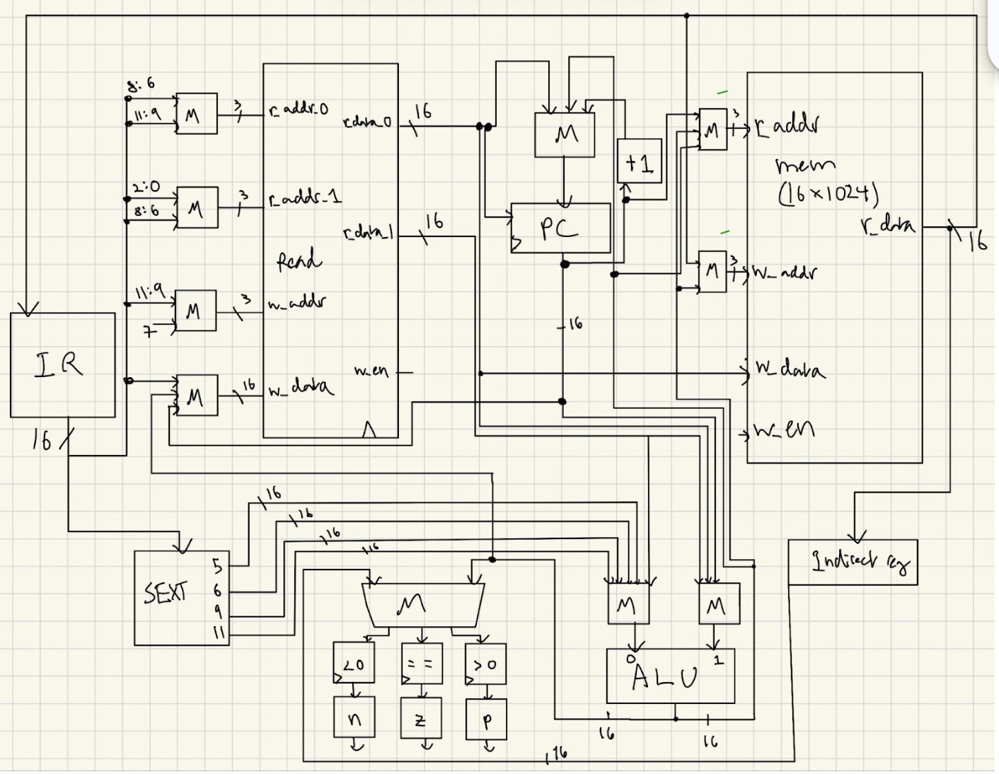
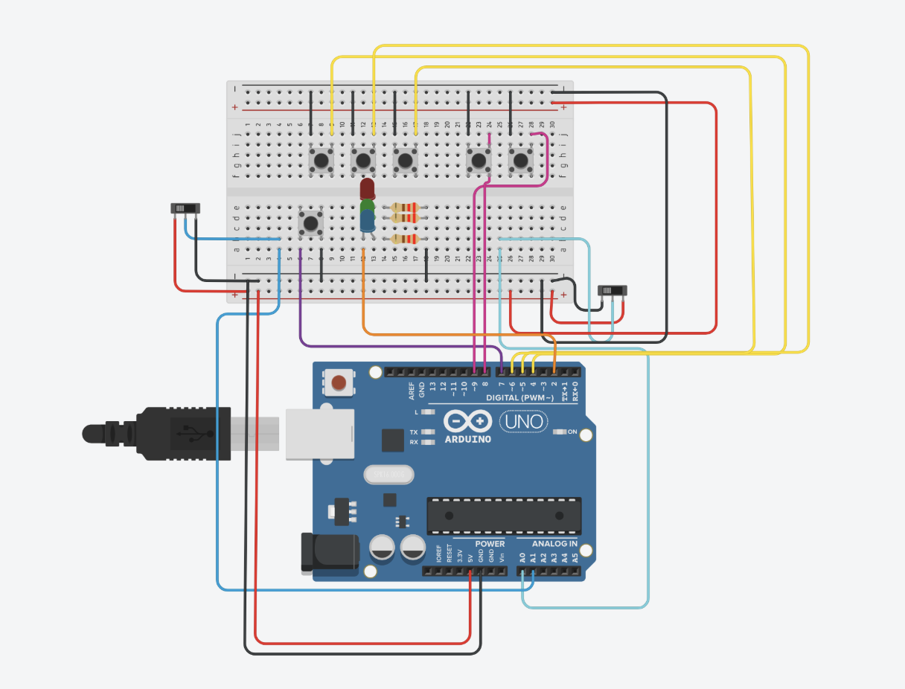

Currently
- Studying Electrical and Computer Engineering at Princeton
- Finished a hardware acceleration internship
- Experimenting with FPGAs
- Making noises with analog synthesizers
- Neverendingly training for a marathon
Selected work
Transferring images over UART from iPad to Basys 3 Artix-7 FPGA, implemented CNN accelerator in SystemVerilog.
SystemVerilog · UART · Basys 3 · FPGA
Using a very simple breadboard setup with Arduino Uno R4.
Arduino Uno R4 · Breadboard · Analog Audio

Breadboard setup.
Breadboard · Analog Audio
Using Verilog and Vivado to implement the LC-3 ISA. Full design implemented on a Basys 3 Artix-7 FPGA.
Verilog · Vivado · Basys 3 · LC-3

ECE203 Final Project. Using Arduino Uno, breadboard, and a Python interface to create a working DJ setup.
Arduino Uno · Python · Breadboard

Background
June 2026 - August 2026
◌ Optimized a hardware resource scheduler to reduce inference latency for a DNN accelerator on AMD Versal VCK190
◌ Developed an automated hardware test-generation framework that targets uncovered RTL branches, increasing line/toggle/branch coverage
September 2025 - December 2025
◌ Fabricated MAPbI3 and FAPbI3 perovskite solar cells using spin coating, thermal annealing, plasma treatment, and multilayer hole-transport-layer deposition
◌ Analyzed XPS measurements of ion migration
June 2025 - August 2025
◌ Developed a Python CRISPR-Cas9 analysis pipeline that automated about 80% of manual gene ranking and comparison, reducing analysis time from over 8 hours to under 30 minutes.
◌ Used pandas, scikit-learn, gProfiler, and MyGene to rank and annotate candidate genes, and presented technical demos for non-computational researchers.
Writing and research
Advisor: Professor Barry P. Rand, Princeton University, 12 Dec 2025
Advisor: Professor Umamaheswara Rao Tida, North Dakota State University, 15 Aug 2026
Notes
July 2026
Add essays, updates, tutorials, reading notes, or project writeups here.